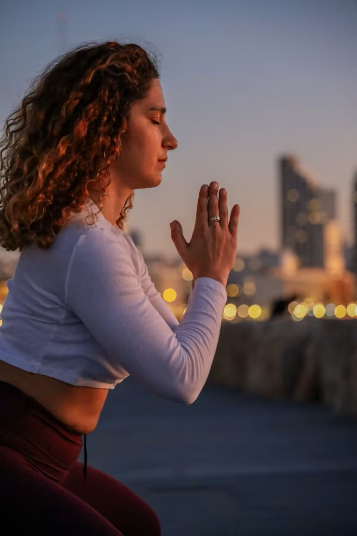

Instructor 01
Aya
毎日心地よく眠れています
リラックス系／呼吸を整えるレッスンが得意。初心者の方も安心して参加できます。
あなたのペースに寄り添う、4人のインストラクター
あなたのペースに寄り添う、4人のインストラクター
Instructor 01
毎日心地よく眠れています
リラックス系／呼吸を整えるレッスンが得意。初心者の方も安心して参加できます。
Instructor 02
家族もリラックスできています
体幹・姿勢を整える丁寧なアプローチ。無理なく続けたい方へ。
Instructor 03
短い時間でリセットできます
忙しい日でも、短い時間で心と体をリセットできるレッスンを大切にしています。
Instructor 04
気分を変えたい時に愛用しています
やさしいストレッチ中心。気持ちが落ち着かない時にも、静かに整える時間を。